消癖颗粒通过抑制CXCL1/HMGB1介导的自噬提高乳腺癌化疗敏感性
王能a,b，杨博文a,b，Gulizeba Muhetaera,b，王胜奇a,b,c，郑轶枫a,b,c，Jiahong Lud，Min Lie，张奉学a,b，司徒红林a,b，林毅a,b，王志宇a,b,c,d,e 。
DOI https://doi.org/10.1016/j.biopha.2019.109519
Biomedicine & Pharmacotherapy ( IF 6.529 )
关键词：乳腺癌化疗、敏感性自噬、CXCL1/HMGB1轴、消癖颗粒
摘要
消癖颗粒是国家批准用于乳腺癌高风险患者的处方药。以往的研究表明，消癖颗粒通过抑制CXCL1的表达来抑制乳腺癌的转移，并认为“癌细胞自噬”可能是其最核心的抗癌机制之一。但是，消癖颗粒能否与化疗药物同时应用，其协同作用机制尚不清楚。在本研究中，消癖颗粒在非细胞毒剂量下可协同增强乳腺癌细胞MDA-MB-231和MCF-7的化疗敏感性。我们发现雷帕霉素诱导的自噬能降低乳腺癌细胞对消癖颗粒的化疗敏感性，该药物的自噬抑制和化疗敏感性与CXCL1有关。证据表明，消癖颗粒联合雷帕霉素或紫杉醇可降低CXCL1的表达。此外，在CXCL1过表达后，消癖颗粒对LC3-II和ABCG2信号的抑制作用减弱，而消癖颗粒诱导的P62上调则重新降低。采用高通量定量聚合酶链反应方法（HT-qPCR）检测HMGB1是消癖颗粒在乳腺癌化疗增敏中的主要自噬靶点。进一步验证提示消癖颗粒主要通过CXCL1/HMGB1自噬轴传递增加化疗敏感性。最后，我们建立了含MDA-MB-231乳腺癌细胞的小鼠和斑马鱼异种移植模型，发现消癖颗粒能安全地增强体内紫杉醇对乳腺癌的化疗敏感性。总的来说，消癖颗粒是一种安全、有效、有潜力的乳腺癌辅助治疗药物，可以抑制CXCL1/HMGB1介导的自噬作用。
1.引言
根据全球癌症统计数据，2018年估计将有210万女性确诊乳腺癌病例，乳腺癌也是100多个国家女性癌症死亡的主要原因【1】。虽然随着新型化疗药物和靶向抑制剂的发展，乳腺癌的总体生存期已经大大提高，但在过去的十年中，乳腺癌死亡率的变异性较小。获得性化疗耐药被认为是提高治疗效果和改善临床结果的最大挑战。目前的研究表明，化疗敏感性与多种因素相关，包括肿瘤干细胞、ABC蛋白表达、代谢改变、基因突变和表观遗传学改变【2】。然而，适应性应激调节机制被认为是导致获得性化疗耐药的最重要原因【3】。在药物治疗时，癌细胞必须激活其自我保护系统，以防御有害的压力并且通过对抗获得生存。自噬是应激反应的机制之一，其激活被证实可诱导化疗耐药。
自噬是一种生理现象，通过消除过多或不必要的蛋白质和通过溶酶体降解受损的细胞器来维持细胞内稳态【4】。研究发现，自噬在骨肉瘤细胞的化疗药物作用下被显著激活，机制研究进一步表明，自噬是诱导化疗抵抗的原因【5】。同时，在耐药的食管癌细胞中也发现了自噬，并且自噬抑制被证明可以提高化疗敏感性【6】。此外，乳腺微球和ALDH+乳腺癌干细胞的自噬通量增高，其机制似乎与shRNA筛选试验显示的Beclin-1/ATG6表达活化有关【7】。临床研究还表明，预处理自噬标记物Beclin-1与乳腺癌细胞增殖含量增加和依西美坦治疗效果差密切相关【8】。自噬抑制已被认为是克服肿瘤耐药性、改善临床预后的一种新的治疗策略。
关于自噬抑制剂，有多种化合物可以抑制自噬的不同阶段，但是唯一经临床批准的自噬抑制剂是氯喹（CQ）及其衍生物（HCQ），如氢氧氯喹【9】。由于HCQ的毒性较小，因此通常选择HCQ进行临床试验，并进行了几个I、II期临床试验，以检验HCQ与替莫唑胺、硼替佐米、替西罗莫司、伏立诺他或阿霉素的抗肿瘤效果。
许多患有黑色素瘤、大肠癌、骨髓瘤和肾细胞癌的患者在接受HCQ治疗后表现出部分反应和稳定性疾病【10】。
然而，当大剂量服用HCQ时，可观察到严重的副作用，如中性粒细胞减少、血小板减少、疲劳和视网膜毒性。更重要的是，HCQ在ph6.5左右的酸性环境中不能抑制自噬，这是由于它被微环境影响的细胞摄取量减少【11】。由于大量乳酸的产生使肿瘤微环境呈酸性，这种现象极大地限制了HCQ的临床应用和治疗效果。从自然资源中寻找安全性高的自噬抑制剂具有重要意义。
几个世纪以来，中医药一直被用于治疗癌症，近年来，中药提取物在西方作为潜在的治疗辅助化疗被广泛研究。同时，植物衍生化合物对新药的发现有着重要的贡献，一些化合物已被报道在化疗过程中协同增强化疗敏感性。
例如，据报道，姜黄素通过中断Nrf2激活和p62调节的自噬之间的相互作用来减少自噬和逆转耐药性【12】。芹菜素还被发现抑制Atg7依赖性自噬，导致阿霉素敏感性增加【13】。牡荆素是一种在多种药用植物中发现的c糖基化黄酮。药理研究表明牡荆素可通过抑制结肠癌细胞Atg5和Beclin-1的表达，降低细胞自噬的水平，同时增加细胞凋亡的反应【14】。
然而，由于方剂在临床上的广泛应用和良好的治疗效果，研究其自噬调节作用具有重要意义。消癖颗粒是国家批准用于乳腺癌高危患者的处方药。此前我们证实，消癖颗粒能通过抑制CXCL1的表达而抑制乳腺癌的转移【15】。但是，消癖颗粒能否与化疗药物同时应用，其协同作用机制尚不清楚。研究消癖颗粒与自噬相关靶点的相互作用具有重要价值。
本研究发现消癖颗粒通过抑制自噬作用对乳腺癌细胞具有化学敏感性。qPCR芯片检测到HMGB1为消癖颗粒服用后最密切的自噬相关基因，消癖颗粒通过抑制CXCL1/HMGB1通路阻断自噬通量。体内研究还表明，消癖颗粒能与紫杉醇协同作用，抑制乳腺癌生长，抑制紫杉醇诱导的自噬。本研究结果不仅为消癖颗粒在化疗中的临床应用提供了依据，而且突出了CXCL1在自噬调节中的新作用。
2.材料和方法
2.1消癖颗粒制备
以消癖颗粒为原料制备冻干粉。简单地说，所有的中药都要经过研磨处理以获得粉末【15】。随后，采用回流提取法，用水(4L)提取消癖颗粒粉末(400g)3次(每次1h)。然后将上清液用旋转蒸发仪和冷冻干燥体系浓缩，得到消癖颗粒的冻干粉。
2.2细胞培养
从美国马里兰州美国菌种保藏中心分离得到非恶性乳腺上皮细胞系MCF-10A、人皮肤成纤维细胞系HSF、人脐静脉血管内皮细胞系HUVEC和乳腺癌细胞系MDA-MB-231、MCF-7。上述所有细胞系的身份已通过短串联重复序列分析验证。
在DMEM/F12培养基中加入5%马血清、1%青霉素和链霉素(Gibco，Grand Island，NY，USA)、20ng/ml重组人表皮生长因子(EGF)、0.5μg/ml氢化可的松、100ng/ml霍乱毒素（cholera toxin）和10μg/ml胰岛素(Sigma-Aldrich，中国上海)。用Dulbecco Modified Eagle培养基(DMEM，Gibco)培养MDA-MB-231细胞、HSF细胞和HUVEC细胞，用RPMI-1640培养基(Gibco)培养MCF-7细胞，加入10%胎牛血清(Gibco)、1%青霉素和链霉素(Gibco)。
所有细胞在含有5%CO2的湿化培养箱中保持在37℃培养。
2.3细胞增殖试验和集落形成试验
采用CCK-8试剂盒(Key GEN BioTECH，Nanjing)，按照生产说明书的要求，研究了消癖颗粒对乳腺癌细胞和非恶性乳腺上皮细胞的细胞毒性。
简单地说，将细胞接种到96孔板上，每孔有3×103个细胞，然后让细胞在板底过夜粘附。
随后，分别用消癖颗粒处理细胞12h、24h、48h和72h。
在指定的药物治疗(消癖颗粒或紫杉醇或雷帕霉素)后，用台盼蓝在Cellometer Mini细胞计数仪 (Nexcelom，Boston，MA，美国)上计数细胞数。
细胞集落形成实验以1×103细胞/孔的密度接种于6孔板。细胞粘附后，加入消癖颗粒或紫杉醇或雷帕霉素。4h后，用新鲜培养基代替上清培养基，培养2周。
所得菌落用4%的多聚甲醛固定，然后用考马斯亮蓝溶液染色，拍照并在显微镜下计数。
2.4药物外排试验
用消癖颗粒预处理MDA-MB-231或MCF-7细胞24小时，表阿霉素37℃培育60分钟，进行药物外排试验。将细胞置于无药物培养基中浸泡90分钟，取细胞进行流式细胞仪分析。流式细胞仪分析采用FACSAria SORP(BD Biosciences)和Modifit LT或FlowJo软件进行分析。
2.5蛋白质印迹法
为了确定蛋白质的浓度，细胞在RIPA缓冲液中裂解(Sigma，st.Louis，MO)，其中含有蛋白酶抑制剂混合物(Roche Diagnostics，IN)。蛋白质浓度的测定采用双链琼脂酸法(Thermo Fisher Scientific，Bonn，Germany)。蛋白质裂解物(50μg)经十二烷基硫酸钠-聚丙烯酰胺凝胶电泳(SDS-PAGE)分离，并在10%聚丙烯酰胺凝胶上进行分离。这些蛋白质然后转移到PVDF膜上(GE Healthcare Freiburg,Germany)。
用CXCL-1(英国剑桥Abcam)、LC-3、P62、HMGB1、Beclin-1(美国罗斯蒙特蛋白技术公司)、mTOR、p-mTOR、ABCG2(Affinity,Cincinnati,USA)的初级抗体在4℃彻夜检测细胞膜。用Tris缓冲盐水和0.05%吐温-20洗涤3次后，膜和抗兔二抗或抗鼠二抗(Proteintech,Rosemont,USA)在室温下孵育2小时。
采用ECL Advance试剂(GE Healthcare)对信号进行可视化处理，并用Image J软件进行量化处理。
2.6质粒转染
用于CXCL-1的商业化重组质粒以及靶向CXCL1和HMGB1的shRNA质粒从Vigene Biosciences（中国济南）购买，并根据制造商的方案使用Lipo Fiter TM试剂（中国上海韩宝生物技术有限公司）转染到指定的细胞中。
2.7免疫荧光分析
为了进行免疫荧光分析，乳腺癌细胞被种植到每个孔2.5×105细胞浓度的激光共聚焦培养皿上，并且让培养皿整夜粘附在培养皿底部。然后，根据制造商的说明，将细胞暴露于mRFP-GFP-LC3腺病毒载体(中国上海汉生生物科技有限公司)或溶菌酶(中国南京凯健生物科技有限公司)或DQ Green BSA(Thermo Fisher Scientific waltham)中，然后用消癖颗粒或紫杉醇或雷帕霉素处理48小时。用LMS710共聚焦显微镜(ZEISS)获取细胞荧光图像，并用Image J软件进行定量。
2.8高通量定量PCR(HT-qPCR)
采用应用生物系统ViiATM 7实时荧光定量PCR技术(Wcgene Biotechnology，Shanghai)对未处理的紫杉醇(50μM)、消癖颗粒(100μg/ml)和紫杉醇(50μM)+消癖颗粒(100μg/ml)进行自噬相关PCR检测。qPCR混合物(10μl)由5μl Roche FastStart Universal SYBR Green Master(2x)、0.75μl每个引物(10μM)、3μl ddH20和0.5μl template组成。初始酶活在95℃下进行10min，然后在95℃下变性30s，在60℃下退火30s，循环40次。生成的熔融曲线从60℃到95℃不等，以确定扩增的特异性。
2.9电子显微镜
电镜下，MDA-MB-231细胞在100mm的培养皿上培养。在指定的药物处理（消癖颗粒或紫杉醇）48小时后，在戊二醛固定溶液(Leagene，北京，中国)中，在室温下将细胞胰蛋白酶化并固定1小时。然后用1%的四氧化锇（osmium tetroxide）/1.5%的亚铁氰化钾（potassium ferrocyanide）处理样品，接着用1%的醋酸铀酰（uranyl acetate）处理样品，然后脱水处理，并嵌入epon-araldite。使用PhilipCM20透射电子显微镜检查自噬体。
2.10乳腺癌小鼠模型和药物治疗
所有的动物操作都是按照广州中医药大学动物护理与使用委员会和国家卫生研究院实验动物保护与使用指南批准的实验动物护理与使用的制度指南进行的。
将1×106 MDA-MB-231细胞移植于4周龄裸鼠乳腺，构建乳腺癌异种移植瘤。化疗组和联合组肿瘤大小约为5×5mm时，腹腔注射紫杉醇10mg/kg，每日3次。消癖颗粒组采用口服灌胃法，每日1g/kg/day，在整个实验期间记录小鼠体重和肿瘤体积。在实验结束时，肿瘤组织在4%的多聚甲醛中过夜固定。在蒸馏水中清洗8h后，用浓度增加的乙醇使组织脱水，用二甲苯清除，最后渗透并包埋在石蜡中。制备组织切片(4μm)，进行免疫组化分析。
2.11斑马鱼育雏维护和产卵
AB株斑马鱼是从中国武汉的国家斑马鱼资源中心购买的。在水温为28.5±1.0℃，pH为6.9-7.5，光/暗循环时间为14/10h的条件下，在循环水养殖系统中饲养斑马鱼。成熟斑马鱼每日两次喂食盐水虾。在测试前一天天黑之前的几个小时，把雄鱼和雌鱼以2:1的比例放置在产卵池中，第二天早晨光线出现后大约30分钟，取出捕卵器，收集卵。为了避免遗传偏倚，鱼卵采自至少三个育种组，混合和随机选择。
2.12斑马鱼乳腺癌异种移植模型
采用DMEM培养基(Gibco)培养MDA-MB-231细胞，并用5μM 1,1′-双十八烷基-3,3,3′,3′-四甲基吲哚二碳花菁高氯酸盐(DiI，Sigma-Aldrich)标记红色荧光。在受精后48h，将200个Dil标记的MDA-MB-231细胞悬浮于20nl培养基中，用微量注射器将其注入每个胚胎的卵黄周间隙(PVS)，建立乳腺癌异种移植模型。携带乳腺癌细胞的幼年斑马鱼（48小时龄），在48孔板(每孔一条鱼)中进一步孵育，在养殖水体中加入2ml不含或含消癖颗粒或紫杉醇的溶液。在荧光显微镜下观察药物对斑马鱼乳腺癌细胞增殖的影响，并用Image J软件进行量化。
2.13斑马鱼胚胎毒性试验
在受精后3小时，将斑马鱼幼鱼置于24孔平板中孵育，每组20只。将斑马鱼幼鱼暴露于不同浓度的消癖颗粒或紫杉醇中。分别于24h、48h、72h和96h检测幼鱼的发育情况、心包水肿、卵黄囊水肿、脊髓弯曲等形态学变化。使用XTL-208A型立体显微镜在24h、48h、72h和96h时记录了正常、畸形和死亡斑马鱼幼鱼的比例。
2.14免疫组织化学（IHC）
将斑马鱼标本置于10%中性缓冲液福尔马林中固定24h，然后进行标准组织处理和包埋。将石蜡包埋的肿瘤标本切割成3μm后，对标本进行脱蜡并再水合处理。在柠檬酸钠缓冲溶液中加热标本进行抗原提取，内源性过氧化物酶分别被3%的过氧化氢灭活。将载玻片与初级抗体(1:50稀释)在4℃孵育一夜，然后与二级抗体在室温下孵育30min。通过与3,3′-二氨基联苯胺(DAB)(ZSGB-BIO，Bejing)共孵育来检测杂交探针。最后，切片在检查前用Mayer苏木精进行复染，脱水，清除并安装。使用的抗体如下:CXCL-1(Abcam，Cambridge，UK)，LC-3，HMGB1(proteintech，Rosemont,USA)，ABCG2(Affinity，Cincinnati，USA)。
2.15苏木精-伊红染色(HE)
简单地说，首先组织切片进行脱蜡处理。室温下用10%苏木精染色细胞核，1%伊红染色细胞质。最后，标本在检查前进行脱水，清洗，和封固。
2.16统计分析
用SPSS19.0软件进行统计分析。数据以平均值±标准差表示，并用单因素方差分析（ANOVA）和t检验进行成对数据统计显著性分析。在所有测试中，p<0.05被认为是统计学意义上的显著差异。
3结果
3.1消癖颗粒能增强乳腺癌细胞对紫杉醇的敏感性
首先，通过CCK-8试验和集落形成试验，观察消癖颗粒对MDA-MB-231(基底样)和MCF-7(腔样) 乳腺癌细胞株增殖的影响。CCK-8细胞增殖实验表明，消癖颗粒在0-600μg/ml范围内对MDA-MB-231和MCF-7乳腺癌细胞的抑制作用不明显。在48-72h的长时间照射后，消癖颗粒在400和600μg/ml时对MDA-MB-231细胞的增殖有抑制作用，但对MCF-7细胞的增殖无明显影响(图1A和B)。
我们还评价了消癖颗粒对MDA-MB-231和MCF-7细胞集落形成能力的长期抑制作用。结果表明，消癖颗粒对两种乳腺癌细胞株的集落生长均有一定的抑制作用(图1C和D)。
为了研究消癖颗粒对正常细胞的细胞毒作用，我们还研究了消癖颗粒对MCF-10A、HUVECs和HSFs的影响。结果发现消癖颗粒对所有正常乳腺细胞株均无细胞毒抑制作用(图1E)。
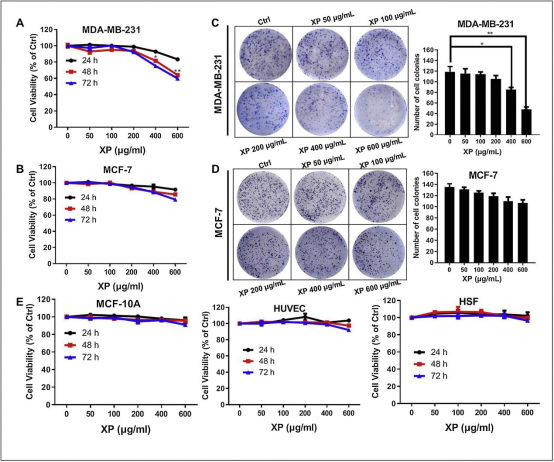
图1.消癖颗粒对人乳腺癌细胞系和正常乳腺细胞系生长的影响。
(A)-(B)应用CCK-8法检测24、48、72h消癖颗粒对MDA-MB-231和MCF-7细胞增殖的影响;
(C)-(D)应用集落形成法评价消癖颗粒对MDA-MB-231和MCF-7细胞的长期抑制作用;
(E)消癖颗粒对MCF-10A、HUVECs和HSFs正常细胞增殖的影响。
所有数值均为平均值±SD，n=3，*p<0.05，**p<0.01。
为了确定消癖颗粒与化疗药物是否具有协同作用，我们将不同浓度的消癖颗粒与紫杉醇在50nm处进行交互作用，这是根据我们之前的研究中化疗药物在48h时的IC50设定的。
CCK-8检测显示消癖颗粒能明显增强紫杉醇诱导的MDA-MB-231和MCF-7细胞死亡(图2A和B)。
与单纯紫杉醇处理相比，紫杉醇和消癖颗粒联合给药对乳腺癌细胞集落生长也有显著的抑制作用(图2C和D)。
此外，药物外排实验表明，消癖颗粒对两种乳腺癌细胞中表阿霉素外排具有明显的抑制作用，表现为表阿霉素在消癖颗粒处理的乳腺癌细胞中荧光强度增强（图2E）。
综上所述，结果提示消癖颗粒在非细胞毒剂量下能协同增强乳腺癌细胞的化疗敏感性。
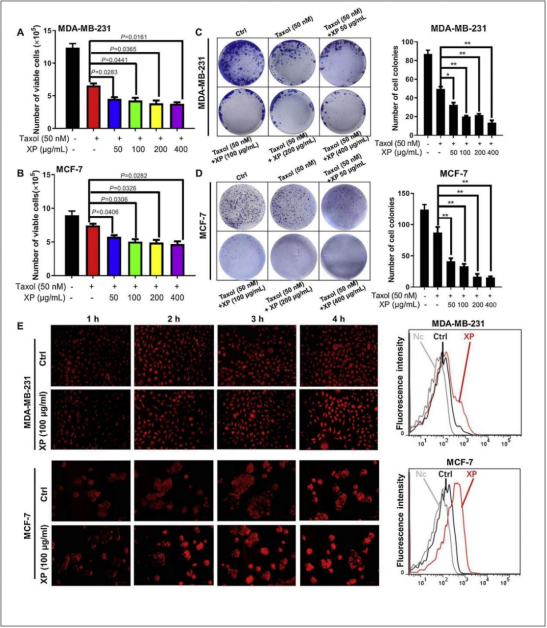
图2.消癖颗粒能显著提高乳腺癌细胞的化疗敏感性。
(A)-(B)用细胞计数法研究消癖颗粒与紫杉醇(50nm)对MDA-MB-231和MCF-7细胞的协同作用。选择紫杉醇浓度为48小时时的IC50值。
(C)-(D)消癖颗粒与紫杉醇(50nM)对MDA-MB-231和MCF-7细胞的集落形成能力。
(E)药物外排试验表明，消癖颗粒(50μg/mL)可以增加表柔比星进入MDA-MB-231和MCF-7细胞，如流式细胞仪显示药物处理细胞中表柔比星的荧光强度增加。
所有值代表平均值±SD，n=3，*P<0.05，**P<0.01。
3.2消癖颗粒对雷帕霉素治疗后乳腺癌细胞自噬的影响
基于网络药理学和生物学过程分析，我们以前假设“癌症自噬”是消癖颗粒(p≤0.005)最核心的抗癌机制之一。
为了验证这一假设，我们首先在10nm处研究了消癖颗粒与已知的自噬激活剂雷帕霉素之间的相互作用。
应用透射电镜观察细胞内结构，结果表明，在雷帕霉素存在下，消癖颗粒能明显减少自噬泡的数量，自噬泡被双膜结构(自噬体、APs、红色箭头)包围，单膜结构(自噬溶酶体、ALs、黄色箭头)包围（图3A）。
为了进一步评估消癖颗粒对雷帕霉素诱导的自噬通量的影响，我们通过蛋白质印迹法分析测定了LC3-II的丰度，这是一种进入自噬囊泡的蛋白质，也是自噬通量的标记物。雷帕霉素作为阳性对照。结果发现，雷帕霉素处理组LC3II明显高于空白对照组，消癖颗粒加雷帕霉素处理组细胞LC3II积累低于雷帕霉素处理组。另外，与单用雷帕霉素组相比，消癖颗粒联合雷帕霉素组p-mTOR和p62表达水平上调，ABCG2表达水平下调，提示消癖颗粒对雷帕霉素诱导的自噬通量有明显的抑制作用(图3B)。
此外，我们还采用了自噬双标腺病毒（mRFP-LC3-GFP）基因检测，其中黄色斑点（mRFP和GFP的合并）和红色斑点（mRFP）的出现分别表明LC3分别存在于自噬体和自噬溶酶体中。单独使用雷帕霉素可使对照细胞中的黄色和红色斑点数量增加，而消癖颗粒可使雷帕霉素诱导的MDA-MB-231细胞中的自噬体和自噬溶酶体数量减少(图3C)。
综上所述，这些结果表明消癖颗粒减弱了雷帕霉素对乳腺癌细胞自噬的影响。
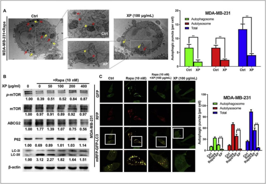
图3.消癖颗粒抑制雷帕霉素诱导的乳腺癌细胞自噬。
(A)MDA-MB-231细胞在指定处理后自噬体（Aps，黄色箭头）和自噬溶酶体（ALs，红色箭头）的透射电子显微镜图像；
(B)在指定处理后使用蛋白质印迹分析p-mTOR、mTOR、ABCG2、p62和LC3的表达；
(C)在指定处理后，用自噬双标腺病毒（mRFP-LC3-GFP）基因检测在MDA-MB-231细胞中测量自噬体和自噬溶酶体的丰度。
所有值均表示平均值±SD，n=3，**P<0.01。（为了解释这个图例中对颜色的引用，读者可以参考本文的网络版本。）
3.3.增强的自噬降低乳腺癌细胞对消癖颗粒的化学敏感性
由于自噬与癌症疾病的化疗耐药性相关，因此推测增强的自噬可能会减轻消癖颗粒的化疗增敏作用。
如图4A所示，雷帕霉素治疗后，消癖颗粒的化学增敏作用降低。
同时，与单独使用消癖颗粒或紫杉醇组相比，消癖颗粒加紫杉醇组LC3-II、p-mTOR和ABCG2表达水平下调，而p62表达上调，提示消癖颗粒加紫杉醇组治疗可以抑制紫杉醇诱导的自噬。然而，雷帕霉素治疗提高了LC3-II的蛋白质水平，而即使在消癖颗粒存在下，p-mTOR、ABCG2表达也降低（图4B）。这一发现与自噬双标腺病毒（mRFP-LC3-GFP）基因检测的检查结果一致。
用紫杉醇处理增加了我们对照细胞中黄色和红色点的数量。相反，这种增加在用消癖颗粒加紫杉醇处理的细胞中被阻断。此外，消癖颗粒减少的自噬点可以被雷帕霉素逆转（图4C和D）。
为了进一步研究它们在乳腺癌中的协同活性，MDA-MB-231用不同浓度的紫杉醇和消癖颗粒处理。如图4E所示，联合治疗与LC3-II、p-mTOR和ABCG2的表达逐渐降低以及P62以剂量依赖性方式逐渐增加有关。
电子显微镜还显示，消癖颗粒处理显著减少了对照或紫杉醇处理的MDA-MB-231细胞中自噬泡的数量（图4F和G）。
值得注意的是，消癖颗粒减少了细胞内蛋白水解，这通过减少LysoRed和DQ-BSA去猝灭来证明（图4H）。
总的来说，这些数据表明，消癖颗粒通过抑制自噬使乳腺癌细胞对紫杉醇具有化学敏感性。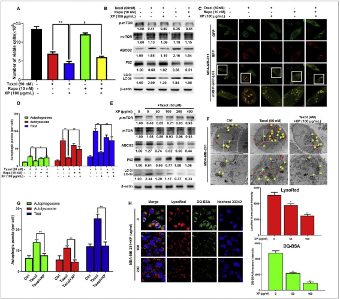
图4.增强的自噬降低了乳腺癌细胞对消癖颗粒的化学敏感性。
(A)指定处理后的细胞数计数。数值代表平均值±SD，n=3，p＜0.01v.s.紫杉醇组；P＜0.05v.s消癖颗粒联合紫杉醇组；
(B)在指定处理后使用蛋白质印迹法分析P-mTOR、mTOR、ABCG2、p62和LC3的表达，数值代表平均值±SD，n=3，P＜0.01v.s.紫杉醇组；P＜0.05v.s.消癖颗粒联合紫杉醇组；
(C)-(D)在指定处理后，用自噬双标腺病毒（mRFP-LC3-GFP）基因检测在MDA-MB-231细胞中测量自噬体和自噬溶酶体的丰度。数值代表平均值±SD，n=3，**P<0.01v.s.紫杉醇组；P<0.05v.s.消癖颗粒联合紫杉醇组；
(E)使用蛋白质印迹分析p-mTOR、mTOR、ABCG2、p62和LC3的表达，使用或不使用紫杉醇(50nM)和消癖颗粒在不同浓度(0-400μg/ml)处理48小时；
(F)-(G)MDA-MB-231细胞中自噬体（Aps，黄色箭头）和自噬溶酶体（ALs，红色箭头）的透射电子显微镜图像，有或没有紫杉醇（50nM）和消癖颗粒（100μg/ml）。数值代表平均值±SD，n=3，**P<0.01v.s.紫杉醇组；
(H)在指定处理后，在MDA-MB-231细胞中用LysoRed或DQ-BSA测量的细胞内蛋白水解。（为了解释这个图例中对颜色的引用，读者可以参考本文的网络版本。）
3.4.消癖颗粒对CXCL1的抑制导致自噬活性降低并随后抑制乳腺癌的化学敏感性
回顾Wang等人的研究课题“基于网络药理学和细胞因子阵列筛选，确定CXC基序趋化因子配体1（CXCL1）是消癖颗粒剂在预防和治疗乳腺癌中的关键调节剂”。
鉴于消癖颗粒可以减少紫杉醇诱导的自噬并随后使乳腺癌化学敏感化，我们假设CXCL1可能在介导自噬和癌症化学抗性中起关键作用。
在图5A中，发现CXCL1过表达以剂量依赖性方式增强了紫杉醇处理的乳腺癌细胞的存活率，而与对照细胞相比，CXCL1的下调显著降低了紫杉醇处理的乳腺癌细胞的细胞增殖。
此外，CXCL1过表达可能诱导自噬通量产生自噬体和/或自噬溶酶体，而沉默CXCL1显著抑制自噬体的形成和自噬相关基因的表达（图5B-E）。
数据表明CXCL1触发自噬促进乳腺癌耐药。
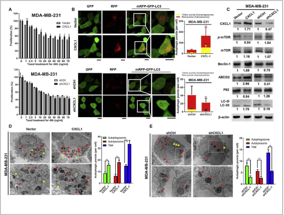
图5.CXCL1可能在介导自噬和癌症化学抗性中起关键作用。
(A)上图：不同浓度紫杉醇处理48小时后，携带对照shRNA（shCtrl）或靶向CXCL1 shRNA(shCXCL1)的MDA-MB-231的癌细胞生长。下图：用不同浓度的紫杉醇或不加紫杉醇的载体质粒（vector）或CXCL1载体（CXCL1）转染MDA-MB-231后48小时的癌细胞生长。数值代表平均值±SD，n=3，*P<0.05；
(B)在转染之前或之后，用自噬双标腺病毒（mRFP-LC3-GFP）基因检测在MDA-MB-231细胞中测量自噬体和自噬溶酶体的丰度。数值代表平均值±SD，n=3，**P<0.01；
(C)采用蛋白质印迹法分析转染前或转染后MDA-MB-231细胞中CXCL1、p-mTOR、mTOR、beclin-1、ABCG2、p62和LC3的表达；
(D)-(E)转染前后MDA-MB-231细胞中自噬体（Aps，黄色箭头）和自噬溶酶体（AL，红色箭头）的透射电子显微镜图像。（为了解释这个图例中对颜色的引用，读者可以参考本文的网络版本。）
我们继续验证消癖颗粒的自噬抑制和化学增敏活性是否依赖于CXCL1。
与对照组相比，消癖颗粒和CXCL1与雷帕霉素或紫杉醇单独组合的较低表达相关（图6A和B）。
为了确定CXCL1是否对消癖颗粒作用至关重要，我们通过将其重组质粒转染到MDA-MB-231来提高CXCL1水平。
如图6C所示，消癖颗粒与紫杉醇协同抑制MDA-MB-231细胞增殖，而CXCL1过表达明显消除了协同作用。此外，CXCL1过表达后消癖颗粒对LC3-II和ABCG2信号的抑制作用减弱，而消癖颗粒诱导的P62上调再次被抑制（图6D）。
自噬双标腺病毒（mRFP-GFP-LC3）基因检测也证实了类似现象（图6E）。
总的来说，这些数据暗示CXCL1在介导消癖颗粒的化学增敏作用中起关键作用。
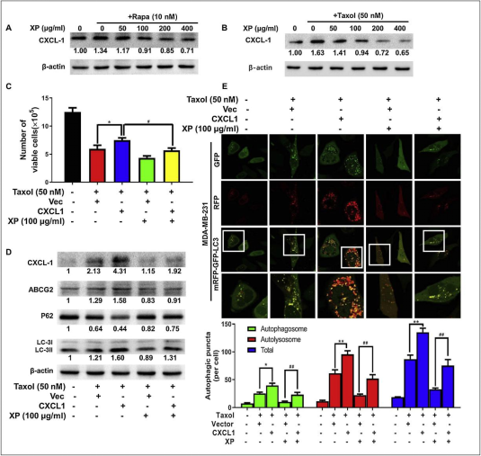
图6.消癖颗粒抑制CXCL1导致乳腺癌细胞自噬活性降低，随后抑制化疗敏感性。
消癖颗粒加（A）雷帕霉素（10nm）或（B）紫杉醇（50nm）治疗48h后，CXCL1在MDA-MB-231细胞中的表达；
(C)细胞计数显示CXCL1过表达明显抑制消癖颗粒与紫杉醇的协同作用。数值代表平均值±标准差，n=3，*P<0.05v.s.紫杉醇+载体组；P＜0.05v.s紫杉醇+CXCL1组；
(D）蛋白质印迹法分析转染CXCL1的MDA-MB-231细胞经指定处理后CXCL1、ABCG2、p62和LC3的表达水平；
(E）用自噬双标腺病毒（MRFP-GFP-LC3）基因检测计算转染CXCL1的MDA-MB-231细胞自噬体和自噬溶酶体的数量。数值代表平均值±标准差，n=3，*P<0.05，**P<0.01v.s.紫杉醇+载体组；P<0.01v.s紫杉醇+CXCL1组。
3.5.消癖颗粒主要通过CXCL1/HMGB1自噬轴发挥化学敏感性
为了揭示消癖颗粒自噬调控精确的分子机制，我们采用高通量qPCR（HT-qPCR）法检测未处理组、紫杉醇组、消癖组和紫杉醇+消癖组中自噬相关基因的mRNA水平。
如图7所示，所列基因在自噬过程中受到显著影响，包括参与自噬液泡形成的基因、连接自噬体与溶酶体的基因、负责蛋白质转运的基因和调控基因自噬诱导。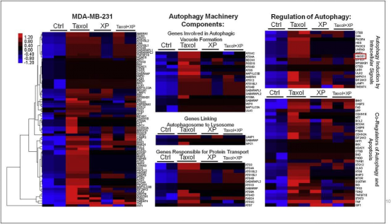
图7.热图显示了通过PCR阵列分析确定的MDA-MB-231细胞暴露于紫杉醇或消癖颗粒处理48小时后自噬基因组的对数（倍数变化）。
相对于对照平均值计算倍数变化。色标范围从红色到蓝色，分别表示基因的上调或下调。（为了解释这个图例中对颜色的引用，读者可以参考本文的网络版本。）
在我们的初步研究中，紫杉醇处理的细胞的自噬活性显著高于未处理的细胞，而消癖颗粒减弱了紫杉醇促进的自噬过程；因此，预期指定组之间的基因差异遵循紫杉醇>紫杉醇+消癖或紫杉醇<紫杉醇+消癖的模式。在这些差异表达的基因中，与紫杉醇组相比，HMGB1被认为是紫杉醇加消癖处理后表达改变最高的基因。RT-qPCR结果进一步证实了紫杉醇或消癖处理后的HMGB1 mRNA表达（图8A）。
我们继续研究CXCL1是否参与调节HMGB1相关信号。蛋白质印迹结果显示，消癖颗粒可以抑制单独由雷帕霉素或紫杉醇诱导的HMGB1表达（图8B）。
同时，外源性过表达或下调CXCL1也导致HMGB1的相应表达变化，表明CXCL1和HMGB1之间存在正调控关系（图8C）。
为了进一步检查CXCL1/HMGB1轴对消癖颗粒关于乳腺癌化学敏感性的影响方式，我们另外使用了shRNA来靶向高CXCL 的MDA-MB-231细胞上的HMGB1（图8D）。
HMGB1缺乏后，CXCL1介导的LC3-II和ABCG2过表达减弱，伴随p62表达增加（图8E）。还发现HMGB1沉默可以在很大程度上逆转消癖颗粒处理的细胞中被CXCL1增强的LC3病灶（图8F）。
数据提示消癖颗粒可能通过CXCL1/HMGB1自噬轴发挥化学增敏作用。
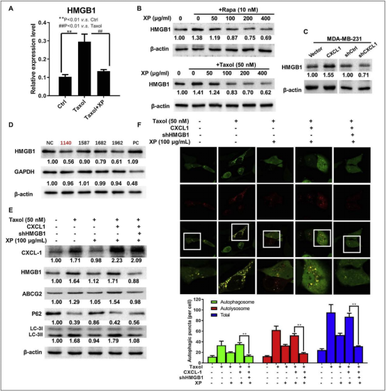
图8消癖颗粒主要通过CXCL1/HMGB1自噬轴发挥化学敏感性。
(A)实时PCR分析显示含或不含消癖颗粒加紫杉醇的MDA-MB-231细胞中HMGB1 mRNA的相对表达。数值代表平均值±SD，n=3，**P<0.01vs对照组；##P<0.01v.s紫杉醇组。
(B)MDA-MB-231细胞中的HMGB1蛋白表达，有或没有消癖颗粒加雷帕霉素（上图，10nM）或紫杉醇（下图，50nM)处理48小时。
(C)使用蛋白质印迹分析转染前或转染后MDA-MB-231细胞中HMGB1蛋白的表达。
(D)使用蛋白质印迹分析，携带对照shRNA(NC)、靶向GAPDH(PC)的shRNA或靶向HMGB1（1140、1587、1682和1962）的shRNAs在MDA-MB-231细胞中的HMGB1和GAPDH蛋白表达，最终选择了shHMGB1140用于以下验证。
(E)使用蛋白质印迹分析，在没有或有shHMGB1140的情况下转染CXCL1异位表达的消癖颗粒处理的MDA-MB-231细胞的CXCL1、HMGB1、ABCG2、p62和LC3表达水平。
(F)用自噬双标腺病毒（mRFP-GFP-LC3）基因检测对经消癖颗粒处理的MDA-MB-231细胞转染的自噬体和自噬溶酶体的数量进行计算。
3.6.消癖颗粒增强体内紫杉醇对乳腺癌的化疗敏感性
根据我们的体外研究结果，验证消癖颗粒在体内的化学增敏作用非常重要。我们通过将MDA-MB-231细胞皮下注射到裸鼠的乳腺中来建立乳腺癌异种移植物。
结果表明，单独使用紫杉醇或消癖颗粒均能缩小肿瘤体积并抑制肿瘤生长，而联合组抑制作用最强。此外，与紫杉醇治疗的肿瘤相比，来自组合组的乳腺肿瘤显示出较少的坏死和出血外观（图9A-C）。
值得注意的是，在整个实验过程中，组合组并未导致显著的体重减轻（图9D）。没有观察到其它不良事件，包括食欲下降、毛皮皱缩或异常行为。
此外，免疫组织化学分析表明消癖颗粒方与紫杉醇共同处理可以显著下调Ki67、CXCL1、LC3II、HMGB1和ABCG2的表达，表明消癖颗粒可能被开发为一种具有高安全性的新型化学增敏剂（图9E）。
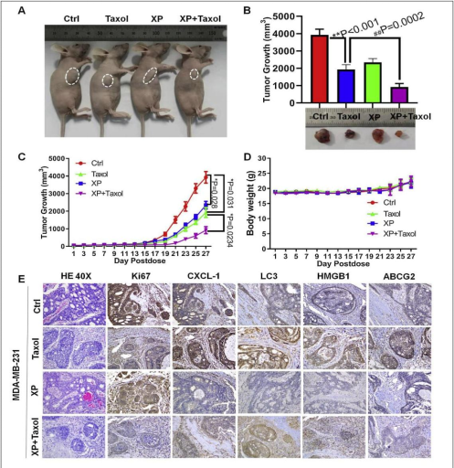
图9.消癖颗粒增强了对携带乳腺癌细胞MDA-MB-231的小鼠异种移植物的体内紫杉醇化学敏感性。
4周龄雌性裸鼠随机分为四组，分别给予赋形剂（Ctrl组）、10mg/kg紫杉醇（紫杉醇组）、1g/kg消癖颗粒（XP组）或按照指定的治疗方案10mg/kg紫杉醇加1g/kg消癖颗粒（XP+紫杉醇组）。
(A)小鼠的代表性图像，(B)肿瘤体积，(C)肿瘤生长，(D)体重和(E)H&E染色以及来自小鼠的Ki67、CXCL1、LC3II、HMGB1和ABCG2表达的IHC检测指示的组。（n=6只小鼠，P<0.05，P<0.01vsctrl组；#P<0.05，##P<0.01vs紫杉醇组）。
3.7.消癖颗粒对斑马鱼乳腺癌异种移植模型中的乳腺癌化疗敏感
我们还生成了带有Dil标记的MDA-MB-231乳腺癌细胞的斑马鱼异种移植模型，以监测乳腺癌的生长及其对紫杉醇加消癖颗粒的反应。
将受精48h后的斑马鱼随机分为4组，分别用赋形剂（ctrl组）、50nM紫杉醇（紫杉醇组）、100μg/kg消癖颗粒（XP组）或50nM紫杉醇加100μg/kg消癖颗粒（紫杉醇+XP组）。
结果显示，在处理24和48小时后，紫杉醇加消癖颗粒组对整体肿瘤生长的抑制作用比单独的紫杉醇更强（图10A和B）。
此外，H&E染色分析显示，紫杉醇和消癖颗粒的协同使用导致肿瘤组织中细胞凋亡显著增加，伴随着CXCL1、LC3II和HMGB1的表达降低（图10C)。
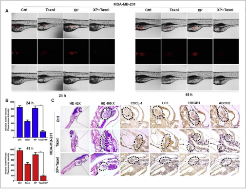
图10.斑马鱼乳腺癌异种移植模型中消癖颗粒对乳腺癌的化疗增敏作用。
(A)消癖颗粒(100μg/ml)显著增强了紫杉醇(50nM)对带有Dil标记的MDA-MB-231细胞的斑马鱼模型的抑制作用。红色数字代表Dil染色的MDA-MB-231细胞的平均荧光强度。数值代表平均值SD,n=6,**P<0.01vsXIAOPI公式；
(B)来自指定组的CXCL1、LC3、HMGB1和ABCG2表达的H&E染色和IHC检测。（为了解释这个图例中对颜色的引用，读者可以参考本文的网络版本。）
值得注意的是，消癖颗粒在整个实验过程中没有导致发育毒性。更有意义的是，消癖颗粒在亚致死剂量（sublethal dosage）下对紫杉醇的毒性没有增强作用（图11）。
综上所述，这些结果表明，消癖颗粒是一种潜在的乳腺癌治疗辅助药物，具有良好的安全性（图11）。
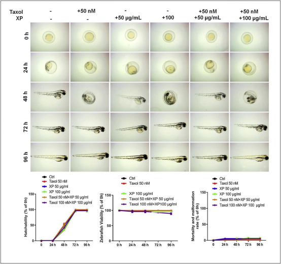
图11.在斑马鱼胚胎的孵化和发育过程中，含有或不含指定浓度紫杉醇的消癖颗粒没有可观察到的胚胎毒性或致畸作用。
所示组间斑马鱼胚胎的累积孵化率没有显著差异（为了解释这个图例中对颜色的引用，读者可以参考本文的网络版本）。
4.讨论
原发性和继发性耐药是决定癌症治疗效果、预后和生存期的主要因素。紫杉醇作为乳腺癌的一线化疗药物，反应率仅达到50%[16]。更严重的是，紫杉醇耐药的乳腺癌细胞会导致对表柔比星等多种化学药物的多药耐药，给治疗策略的选择带来巨大困难[17]。幸运的是，许多配方和天然产品已被证明可以促进癌症化学敏感性或逆转多药耐药性。例如，据报道，温下肠腑方（Wen xia Chang fu formula）可逆转肺癌中细胞粘附介导的耐药性[18]。止真方（Zhi Zhen Fang formula）也被证明可以抑制Hedgehog通路介导的多药耐药性【19】。
在19种药材中，研究表明甘草、大黄、黄芩、茯苓、薏苡仁、生姜（干）、黄连、麻黄、细辛对紫杉醇的敏感性显著增强[20]。这些发现有力地表明，探索药用植物和化学药物之间的协同作用是有趣和重要的。我们的研究表明，消癖颗粒可显著提高体外和体内乳腺癌的化疗敏感性。消癖颗粒虽然对MCF-7和MDA-MB-231细胞的增殖几乎没有细胞毒作用，但它减少了紫杉醇的外排，从而增加了其细胞毒作用。体内研究结果也表明，消癖颗粒对斑马鱼的孵化率几乎没有毒性作用，而消癖颗粒与紫杉醇的共同处理对受精卵的发育没有产生有害影响。这些研究结果表明，当与紫杉醇联合使用时，消癖颗粒具有很高的安全性。
目前，癌症耐药性涉及多种分子机制。尽管许多生物标志物已被证明与化学耐药性有关，但越来越多的证据表明，外部危险事件的应激调节机制是根本原因。自噬是化学药物给药过程中的最重要的应激调节机制。多项研究表明，化学药物可诱导多种癌细胞发生自噬[21]。自噬诱导不仅导致自噬细胞死亡，而且导致耐药性的发展。自噬提供支持残留活癌细胞生长的能量和营养。同时，受损的细胞器和蛋白质也需要自噬消化以避免死亡[22]。所以，自噬抑制被认为是增强化学敏感性的新策略。大量研究表明，自噬抑制剂可以使癌症化学增敏并抑制随后的转移[23,24]。我们的研究还表明，消癖颗粒可以抑制紫杉醇诱导的自噬。自噬通量、自噬体和生物标志物蛋白LC3-II在消癖颗粒治疗后均受到抑制。更重要的是，雷帕霉素给药显著减轻了消癖颗粒的自噬抑制作用，表明自噬在介导消癖颗粒化学增敏作用中的关键作用。
先前的研究表明CXCL1是消癖颗粒的关键分子靶点[15]。然而，CXCL1是否会参与自噬调节仍不清楚。在此，我们发现CXCL1的升高会触发自噬通量并缓解消癖颗粒的化学增敏作用，表明CXCL1可能介导了乳腺癌细胞的化学抗性特性。实际上，之前有报道称，化疗会诱导CXCL1升高，其过度表达会导致乳腺癌细胞产生耐药性[25]。同时，CXCL1过表达也参与了转移促进、新血管生成和癌症干细胞更新[26-28]。我们的研究结果首先强调了CXCL1在介导自噬中的作用。大量研究报道HMGB1可诱导自噬介导多种恶性肿瘤的耐药性，如肺癌、胃肠道癌和乳腺癌[29-31]。HMGB1过表达能够在人乳腺癌细胞系MDA-MB-231中诱导多柔比星抗性，而抗HMGB1中和抗体降低了这种作用[32]。类似地，HMGB下调抑制了辐射诱导的自噬，并显著增强了乳腺癌的放射敏感性[33]。发现多种途径参与HMGB1调节的自噬。在细胞核中，HMGB1可以充当转录因子并上调热休克蛋白27(HSP27)的转录，从而触发线粒体自噬过程[34]。同时，细胞质HMGB1还可以诱导Beclin-1/Bcl-2复合物的解离并促进Beclin-1/PI3K-III的相互作用，最终加速自噬通量[35]。此外，细胞外HMGB1可以与多种受体结合，如晚期糖基化终末产物(RAGE)受体，并通过AMPK/mTOR通路[36]。在我们的研究结果中，我们还发现CXCL1升高或敲除可能对HMGB1表达产生显著影响。同时，Belcin-1、p62和p-mTOR的表达也受到影响，表明CXCL1可能在细胞质水平上影响HMGB1的表达。然而，CXCL1和Beclin-1之间的潜在分子机制仍需要进一步研究。
综上所述，我们的研究结果表明，消癖颗粒可以通过抑制CXCL1-HMGB1信号传导来提高乳腺癌的化疗敏感性。研究结果不仅为支持消癖颗粒在化疗期间的应用提供了新的证据，而且强调了自噬诱导过程中CXCL1和HMGB1之间的新相互作用。
参考文献：
[1] F. Bray, J. Ferlay, I. Soerjomataram, R.L. Siegel, L.A. Torre, A. Jemal, Global cancer statistics 2018: GLOBOCAN estimates of incidence and mortality worldwide for 36 cancers in 185 countries, CA Cancer J. Clin. 68 (6) (2018) 394–424.
[2] T. Shibue, R.A. Weinberg, EMT, CSCs, and drug resistance: the mechanistic link and clinical implications, Nat. Rev. Clin. Oncol. 14 (10) (2017) 611–629.
[3] Z. Wang, N. Wang, P. Liu, F. Peng, H. Tang, Q. Chen, R. Xu, Y. Dai, Y. Lin, X. Xie, C. Peng, H. Situ, Caveolin-1, a stress-related oncotarget, in drug resistance, Oncotarget 6 (35) (2015) 37135-50.
[4] C.K. Das, M. Mandal, D. Kogel, Pro-survival autophagy and cancer cell resistance to therapy, Cancer Metastasis Rev. 37 (4) (2018) 749–766.
[5] X. Xiao, W. Wang, Y. Li, D. Yang, X. Li, C. Shen, Y. Liu, X. Ke, S. Guo, Z. Guo, HSP90AA1-mediated autophagy promotes drug resistance in osteosarcoma, J. Exp. Clin. Cancer Res. 37 (1) (2018) 201.
[6] L. Yu, C. Gu, D. Zhong, L. Shi, Y. Kong, Z. Zhou, S. Liu, Induction of autophagy counteracts the anticancer effffect of cisplatin in human esophageal cancer cells with acquired drug resistance, Cancer Lett. 355 (1) (2014) 34–45.
[7] C. Gong, C. Bauvy, G. Tonelli, W. Yue, C. Delomenie, V. Nicolas, Y. Zhu, V. Domergue, V. Marin-Esteban, H. Tharinger, L. Delbos, H. Gary-Gouy, A.P. Morel, S. Ghavami, E. Song, P. Codogno, M. Mehrpour, Beclin 1 and autophagy are required for the tumorigenicity of breast cancer stem-like/progenitor cells, Oncogene 32 (18) (2013) 2261-72, 2272e 1-11.
[8] T. Ueno, S. Saji, M. Sugimoto, N. Masuda, K. Kuroi, N. Sato, H. Takei, Y. Yamamoto, S. Ohno, H. Yamashita, K. Hisamatsu, K. Aogi, H. Iwata, S. Imoto, H. Sasano, M. Toi, Clinical signifificance of the expression of autophagy-associated marker, beclin 1, in breast cancer patients who received neoadjuvant endocrine therapy, BMC Cancer 16 (2016) 230.
[9] C.I. Chude, R.K. Amaravadi, Targeting autophagy in cancer: update on clinical trials and novel inhibitors, Int. J. Mol. Sci. 18 (6) (2017).
[10] S. Fulda, Autophagy in cancer therapy, Front. Oncol. 7 (2017) 128.
[11] T.T. Shi, X.X. Yu, L.J. Yan, H.T. Xiao, Research progress of hydroxychloroquine and autophagy inhibitors on cancer, Cancer Chemother. Pharmacol. 79 (2) (2017) 287–294.
[12] J. Shen, Y.J. Chen, Y.W. Jia, W.Y. Zhao, G.H. Chen, D.F. Liu, Y.Y. Chen, C. Zhang,X.P. Liu, Reverse effffect of curcumin on CDDP-induced drug-resistance via Keap1/ p62-Nrf2 signaling in A549/CDDP cell, Asian Pac. J. Trop. Med. 10 (12) (2017) 1190–1196.
[13] A.M. Gao, X.Y. Zhang, J.N. Hu, Z.P. Ke, Apigenin sensitizes hepatocellular carcinoma cells to doxorubic through regulating miR-520b/ATG7 axis, Chem. Biol. Interact. 280 (2018) 45–50.
[14] M. Bhardwaj, H.J. Cho, S. Paul, R. Jakhar, I. Khan, S.J. Lee, B.Y. Kim, M. Krishnan, T.P. Khaket, H.G. Lee, S.C. Kang, Vitexin induces apoptosis by suppressing autophagy in multi-drug resistant colorectal cancer cells, Oncotarget 9 (3) (2018) 3278–3291.
[15] N. Wang, Y. Zheng, J. Gu, Y. Cai, S. Wang, F. Zhang, J. Chen, H. Situ, Y. Lin, Z. Wang, Network-pharmacology-based validation of TAMS/CXCL-1 as key mediator of XIAOPI formula preventing breast cancer development and metastasis, Sci. Rep. 7 (1) (2017) 14513.
[16] B. Lian, X. Hu, Z.M. Shao, Unveiling novel targets of paclitaxel resistance by single molecule long-read RNA sequencing in breast cancer, Sci. Rep. 9 (1) (2019) 6032.
[17] N.N. Wang, L.J. Zhao, L.N. Wu, M.F. He, J.W. Qu, Y.B. Zhao, W.Z. Zhao, J.S. Li, J.H. Wang, Mechanistic analysis of taxol-induced multidrug resistance in an ovarian cancer cell line, Asian Pac. J. Cancer Prev. 14 (9) (2013) 4983-8.
[18] Y. Zhang, Z. Wu, H. Yu, H. Wang, G. Liu, S. Wang, X. Ji, Chinese herbal medicine wenxia changfu formula reverses cell adhesion-mediated drug resistance via the integrin beta1-pi3k-akt pathway in lung cancer, J. Cancer 10 (2) (2019) 293–304.
[19] H. Sui, P. Duan, P. Guo, L. Hao, X. Liu, J. Zhang, H. Zhu, M. Zhao, H. Wang, Q. Li, S. Wang, Zhi Zhen Fang formula reverses hedgehog pathway mediated multidrug resistance in colorectal cancer, Oncol. Rep. 38 (4) (2017) 2087–2095.
[20] K. Takara, S. Horibe, Y. Obata, E. Yoshikawa, N. Ohnishi, T. Yokoyama, Effffects of 19 herbal extracts on the sensitivity to paclitaxel or 5-flfluorouracil in HeLa cells, Biol. Pharm. Bull. 28 (1) (2005) 138-42.
[21] X. Sui, R. Chen, Z. Wang, Z. Huang, N. Kong, M. Zhang, W. Han, F. Lou, J. Yang, Q. Zhang, X. Wang, C. He, H. Pan, Autophagy and chemotherapy resistance: a promising therapeutic target for cancer treatment, Cell Death Dis. 4 (2013) e838.
[22] H.T. Chen, H. Liu, M.J. Mao, Y. Tan, X.Q. Mo, X.J. Meng, M.T. Cao, C.Y. Zhong, Y. Liu, H. Shan, G.M. Jiang, Crosstalk between autophagy and epithelial-mesenchymal transition and its application in cancer therapy, Mol. Cancer 18 (1) (2019) 101.
[23] M.A. Sooro, N. Zhang, P. Zhang, Targeting EGFR-mediated autophagy as a potential strategy for cancer therapy, Int. J. Cancer 143 (9) (2018) 2116–2125.
[24] C.H. Chang, K. Bijian, D. Wernic, J. Su, S.D. da Silva, H. Yu, D. Qiu, M. Asslan, M.A. Alaoui-Jamali, A novel orally available seleno-purine molecule suppresses triple-negative breast cancer cell proliferation and progression to metastasis by inducing cytostatic autophagy, Autophagy 15 (8) (2019) 1376–1390.
[25] S. Acharyya, T. Oskarsson, S. Vanharanta, S. Malladi, J. Kim, P.G. Morris, K. Manova-Todorova, M. Leversha, N. Hogg, V.E. Seshan, L. Norton, E. Brogi, J. Massague, A CXCL1 paracrine network links cancer chemoresistance and metastasis, Cell 150 (1) (2012) 165-78.
[26] D. Wang, H. Sun, J. Wei, B. Cen, R.N. DuBois, CXCL1 is critical for premetastatic niche formation and metastasis in colorectal cancer, Cancer Res. 77 (13) (2017) 3655–3665.
[27] Y. Wang, J. Liu, Q. Jiang, J. Deng, F. Xu, X. Chen, F. Cheng, Y. Zhang, Y. Yao, Z. Xia, X. Xu, X. Su, M. Huang, L. Dai, Y. Yang, S. Zhang, D. Yu, R.C. Zhao, Y. Wei, H. Deng, Human adipose-derived mesenchymal stem cell-secreted CXCL1 and CXCL8 facilitate breast tumor growth by promoting angiogenesis, Stem Cells 35 (9) (2017) 2060–2070.
[28] K.H. Tang, S. Ma, T.K. Lee, Y.P. Chan, P.S. Kwan, C.M. Tong, I.O. Ng, K. Man, K.F. To, P.B. Lai, C.M. Lo, X.Y. Guan, K.W. Chan, CD133(+) liver tumor-initiating cells promote tumor angiogenesis, growth, and self-renewal through neurotensin/ interleukin-8/CXCL1 signaling, Hepatology 55 (3) (2012) 807-20.
[29] B. Pan, D. Chen, J. Huang, R. Wang, B. Feng, H. Song, L. Chen, HMGB1-mediated autophagy promotes docetaxel resistance in human lung adenocarcinoma, Mol. Cancer 13 (2014) 165.
[30] S.S. Yadav, M. Kumar, A. Varshney, P.K. Yadava, KLF4 sensitizes the colon cancer cell HCT-15 to cisplatin by altering the expression of HMGB1 and hTERT, Life Sci. 220 (2019) 169–176.
[31] B. Liu, X. Qi, X. Zhang, D. Gao, K. Fang, Z. Guo, L. Li, Med19 is involved in chemoresistance by mediating autophagy through HMGB1 in breast cancer, J. Cell. Biochem. 120 (1) (2019) 507–518.
[32] K. Amornsupak, T. Insawang, P.P.O.C. Thuwajit, S.A. Eccles, C. Thuwajit, Cancerassociated fifibroblasts induce high mobility group box 1 and contribute to resistance to doxorubicin in breast cancer cells, BMC Cancer 14 (2014) 955.
[33] J. Luo, J. Chen, L. He, Mir-129-5p attenuates irradiation-induced autophagy and decreases radioresistance of breast cancer cells by targeting HMGB1, Med. Sci. Monit. 21 (2015) 4122-9.
[34] T. Xu, L. Jiang, Z. Wang, The progression of HMGB1-induced autophagy in cancer biology, Onco. Ther. 12 (2019) 365–377.
[35] Q. Zhang, R. Kang, H.J. Zeh 3rd, M.T. Lotze, D. Tang, DAMPs and autophagy: cellular adaptation to injury and unscheduled cell death, Autophagy 9 (4) (2013) 451-8.
[36] J. Li, P.W. Wu, Y. Zhou, B. Dai, P.F. Zhang, Y.H. Zhang, Y. Liu, X.L. Shi, Rage induces hepatocellular carcinoma proliferation and sorafenib resistance by modulating autophagy, Cell Death Dis. 9 (2) (2018)